Linux Ubuntu
A. Penjelasan
Ubuntu adalah salah satu distribusi Linux yang berbasiskan pada Debian dan memiliki interface desktop.
B. Tutorial Installasi
Tutorial Install Linux Ubuntu
Tutorial install Linux Ubuntu 16.04 desktop dengan virtual box :**
-
Setelah kita selesai menginstall Virtual Box,langkah selanjutnya adalah menginstall Linux Ubuntu pada Virtual Box.Klik icon New dan akan tampil seperti digambar.Ketikkan Linux pada Name dan pilih version Linux nya 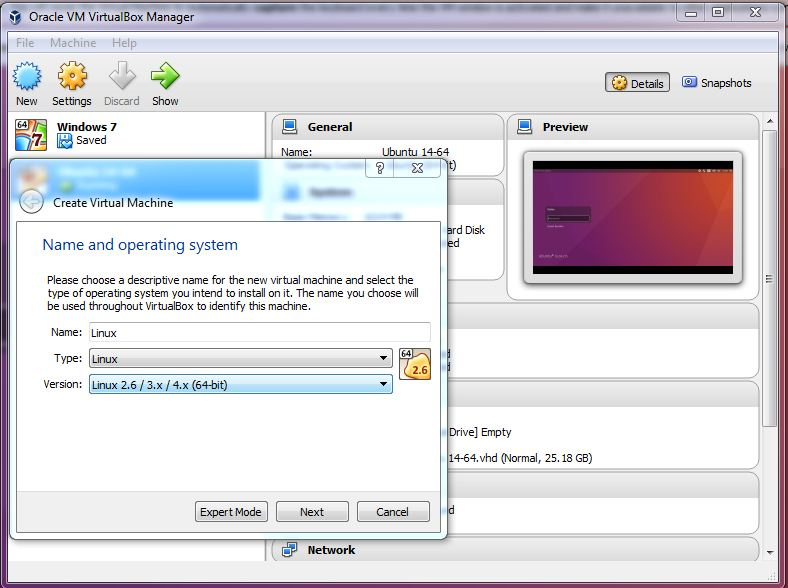
-
Langkah berikutnya mengatur ukuran memori dan klik next/lanjut. 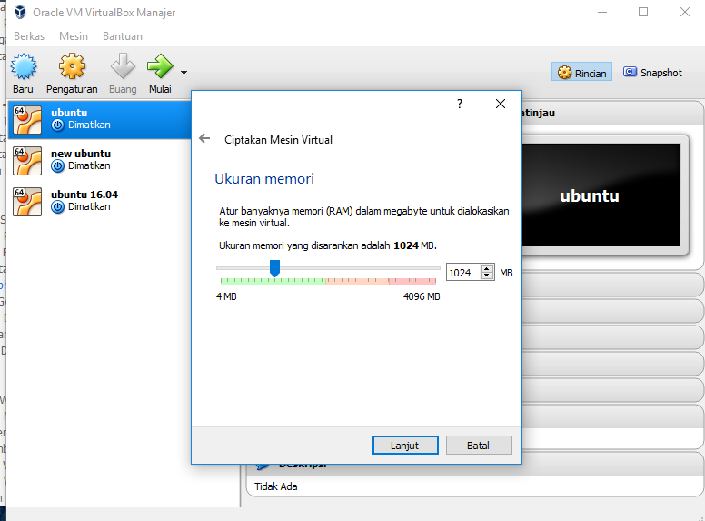
-
Lalu pilih penyimpanan hardisk dan klik buat 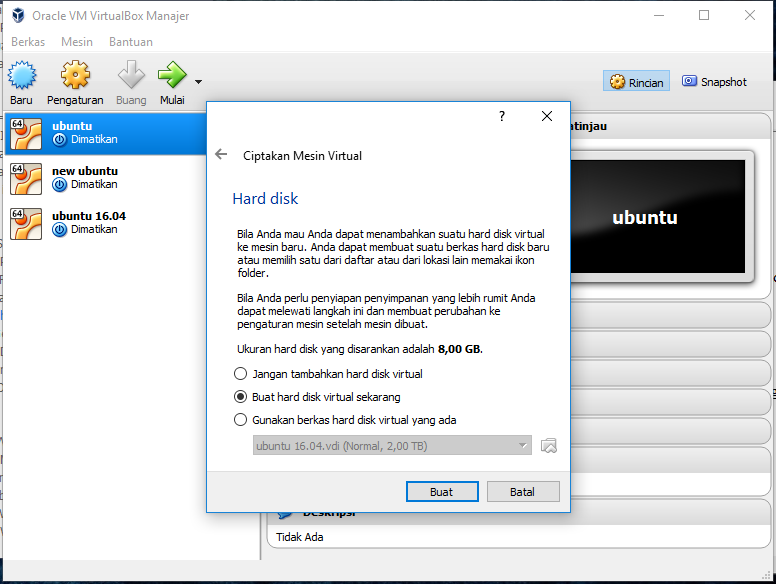
-
Pilih tipe hard disk seperti pada gambar dan klik next/lanjut 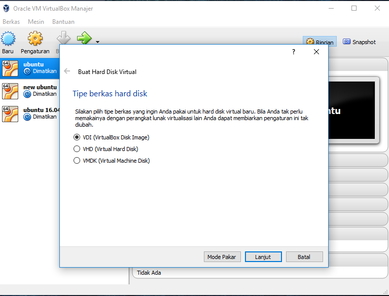
-
Pada penyimpanan hard disk fisik pilih yang dialokasikan secara dinamik 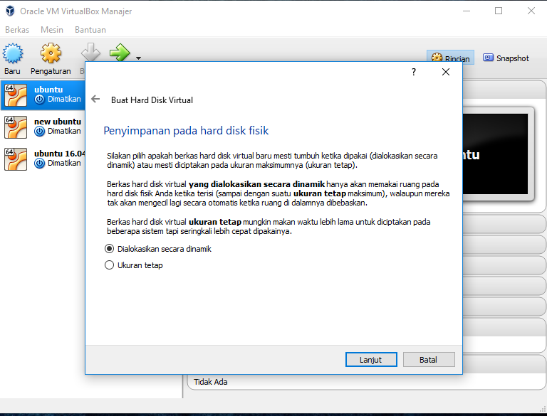
-
Pilih ukuran berkas dan klik buat 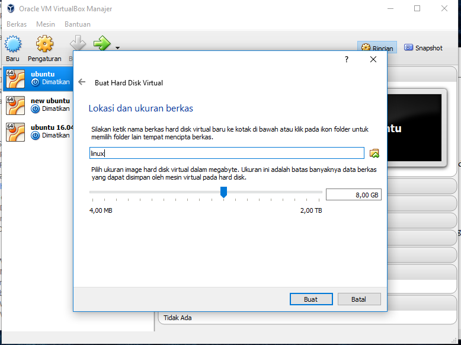
-
Memproses tampilan Ubuntu 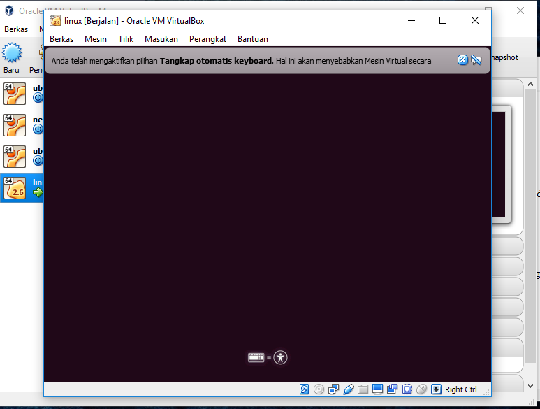
-
Dan inilah tampilan Linux Ubuntu 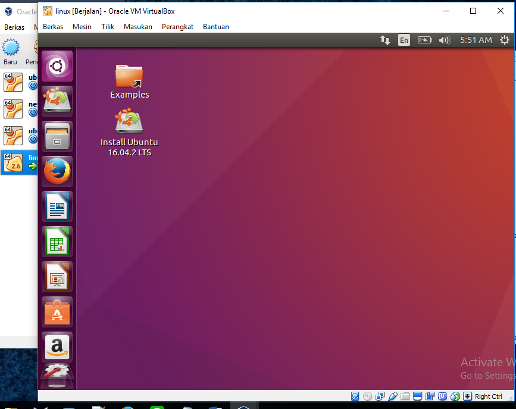
Tutorial Install PHP
Tutorial install PHP di Linux Ubuntu 16.04 desktop dengan virtual box :
-
Kita login terlebih dahulu pada Linux 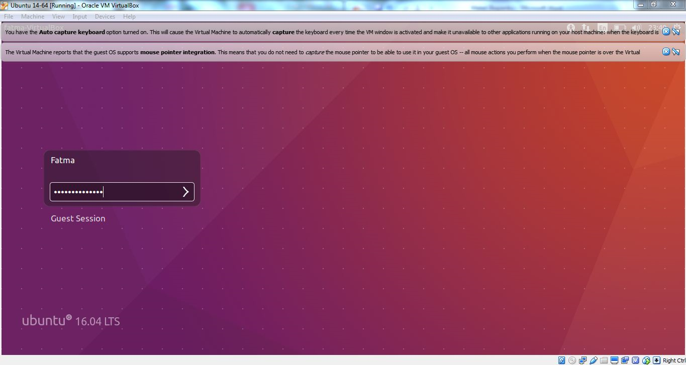
-
Berikut tampilan program Linux 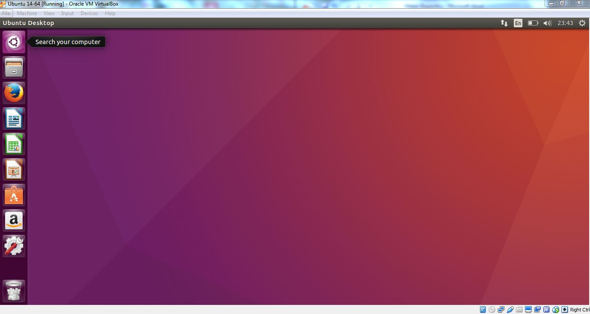
-
Lalu tekan tombol windows pada keyboard dan ketikkan terminal.Terminal di Linux seperti cmd pada Windows 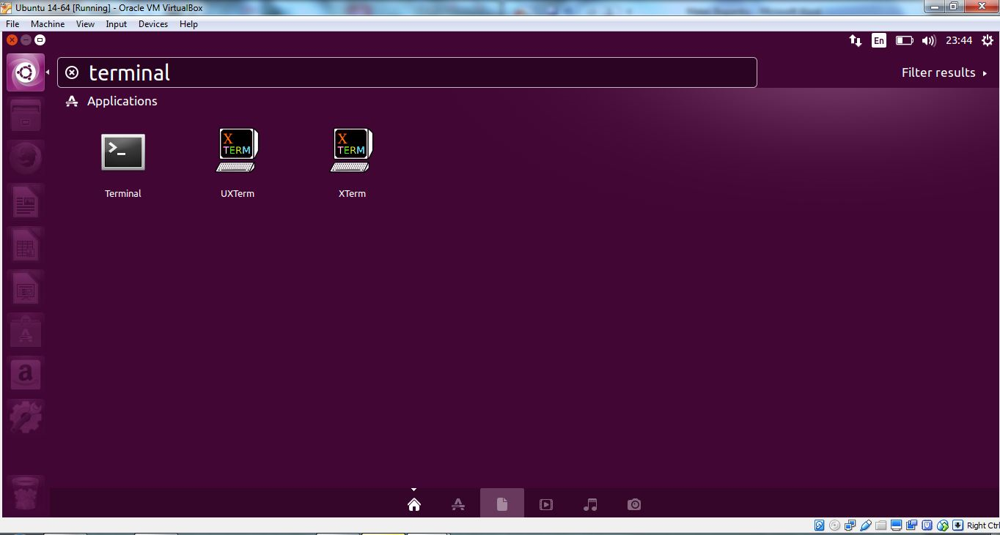
-
Setelah itu akan muncul seperti berikut dan ketikkan $sudo apt- get install apache2.Ini adalah perintah untuk menginstall apache yang dimana apache ini akan berhubungan dengan php. 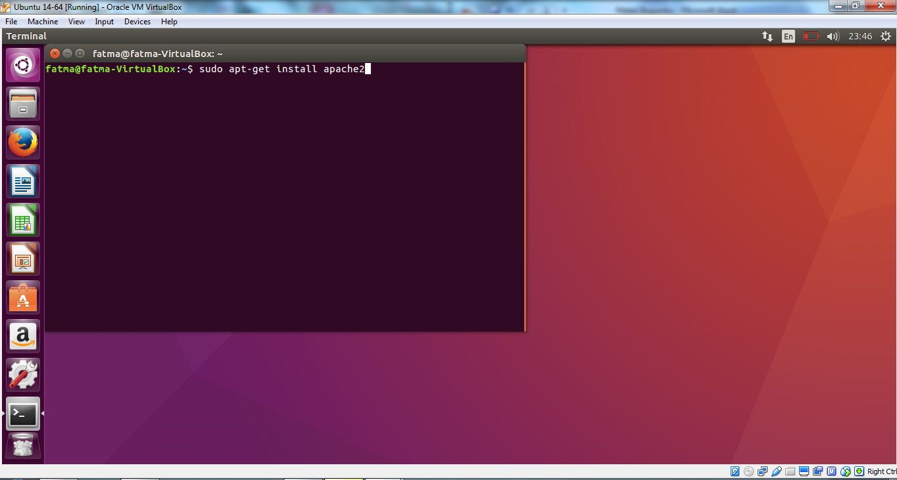
-
Setelah itu Enter dan akan muncul perintah masukkan password. Silahkan isikan password yang sebelumnya sudah kalian buat. 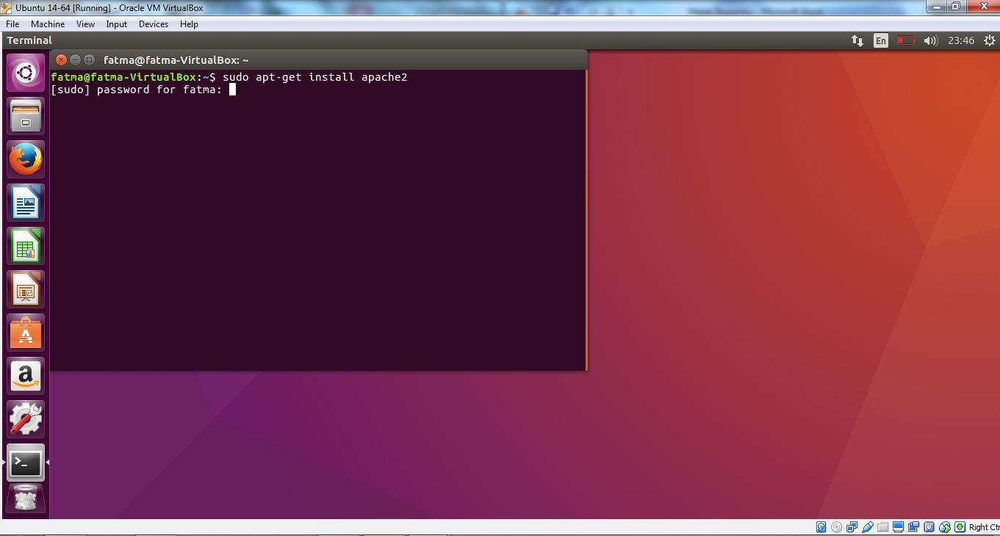
-
Setelah itu Enter lagi.Kemudian ketikkan $ sudo install mysql-server untuk menginstall my sql karena my sql juga berhubungan dengan php yang berkaitan menghubungkan database. 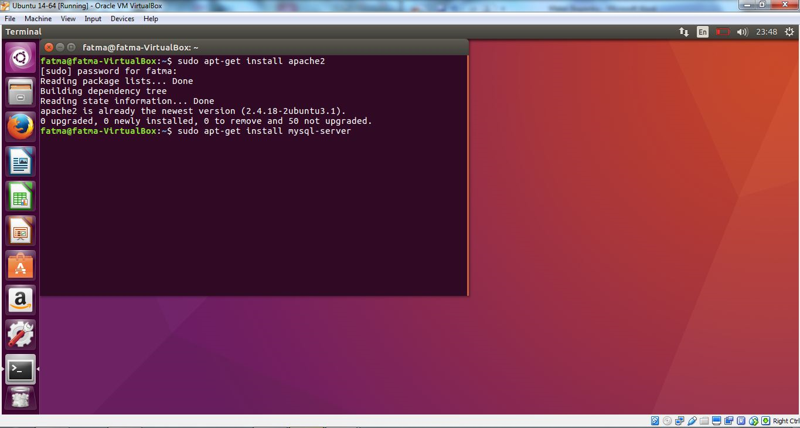
-
Lalu Enter lagi.Ketikkan Y untuk menjawab pertanyaan seperti pada gambar berikut.
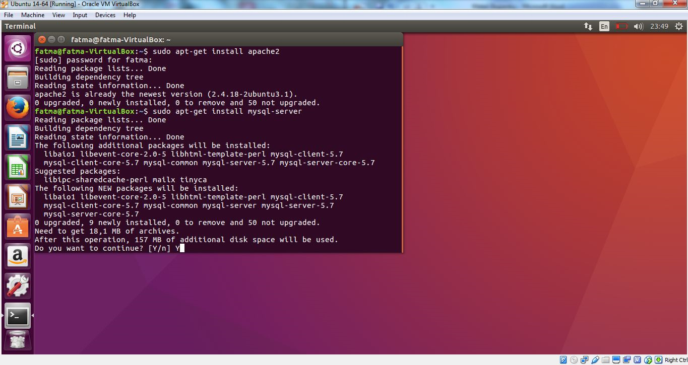 -
Kemudian saatnya menginstall php dengan cara ketikkan $ sudo apt- get install php dan kemudian Enter lagi. 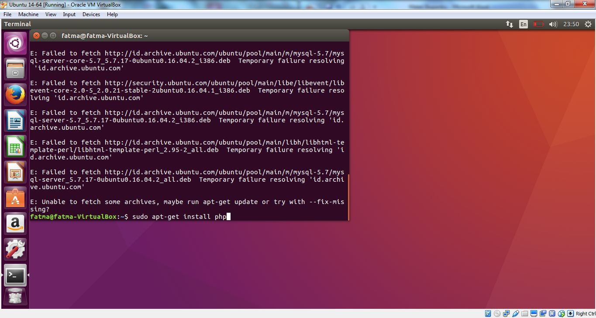
-
Kemudian ketikkan localhost pada browser dan jalankan. 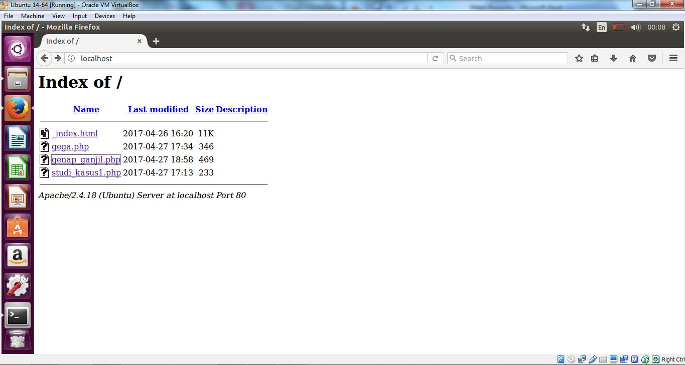
C. Perintah dasar Command Line
Perintah dasar Command Line di Linux Ubuntu 16.04 desktop dengan virtual box
Perintah-perintah Dasar di Linux Ubuntu.Ubuntu sangat terkenal dengan CLI-nya (Command Line Interface). CLI sendiri adalah antar muka yang tidak menyediakan grafik, baik berupa gambar-gambar, jendela-jendela ataupun animasi-animasi yang bisa memanjakan pengguna, melainkan hanya berupa teks yang harus diketikkan oleh pengguna. Jadi, apabila user ingin melakukan operasi dalam sistem operasi tersebut, misalnya melakukan copy, rename, cut, delete, dan sebagainya, maka pengguna harus megetikkan perintah berupa teks dengan cara manual dan bukan dengan klik-klik seperti pada interface GUI (Graphic User Interface).
-
Berikut ini adalah beberapa perintah yang bisa digunakan di sistem operasi Ubuntu pada mode CLI, baik Desktop maupun Server, yang juga banyak untuk bisa digunakan pada distro yang lain. Pada contoh ini saya menggunakan Ubuntu Desktop 10.10.
1. sudo su
Digunakan untuk login sebagai root/pengguna tertinggi
Sintaks : sudo su
2. login
Digunakan untuk login sebagai user lain, namun harus menjadi root dulu untuk bisa menjalankan peirntah ini.
Sintaks : login namauser
Contoh : login adam
3. cd
Digunakan untuk berpindah direktori
Sintaks : cd alamat_direktori
Contoh : cd /var/www
4. pwd
Digunakan untuk memperlihatkan di direktori mana posisi kita berada sekarang.
Sintaks : pwd
5. ls
Digunakan untuk melihat isi sebuah direktori.
Sintaks : ls
6. cp
Digunakan untuk melakukan copy file.
Sintaks : cp /direktori/file_yang_ingin_dicopy /direktori tujuan
Contoh : cp /etc/file1.txt /var/www
7. mv
Digunakan untuk melakukan memindahkan, cut atau rename file.
Sintaks :
mv /direktori/file_yang_ingin_dicut /direktori tujuan (cut)
mv /direktori/file_yang_ingin_direname /nama_baru_file (rename)
Contoh:
mv /etc/file1.txt /var/www
mv /etc/file1.txt file2.txt
8. mkdir
Digunakan untuk membuat folder baru.
Sintaks : mkdir nama_folder
Contoh : mkdir folder1
9. rmdir
Digunakan untuk menghapus folder.
Sintaks : rmdir nama_folder
Contoh : rmdir folder1
10. touch
Digunakan untuk membuat file baru.
Sintaks : touch nama_file
Contoh : touch file1.txt
11. rm
Digunakan untuk menghapus file.
Sintaks : rm nama_file
Contoh : rm file1.txt
12. more
Digunakan untuk menampilkan isi sebuah file
Sintaks : more nama_fie
Contoh : more file1.txt
13. echo
Digunakan untuk menuliskan sesuatu kata atau kalimat ke sebuah file.
Sintaks : echo “isi pesan” nama_file
Contoh : echo “Hai ini adalah contoh pesan” >> file1.txt
14. adduser
Digunakan untuk menambah user baru.
Sintaks : adduser nama_user
Contoh : adduser adamkurniawan
15. addgroup
Digunakan untuk menambah group baru
Sintaks : addgroup nama_group
Contoh : addgroup grup1
16. lsusb
Digunakan untuk melihat perangkat usb yang sedang terkoneksi ke komputer
Sintaks : lsusb
17. lspci
Digunakan untuk melihat perangkat pci yang sedang terkoneksi ke komputer
Sintaks : lspci
18. lshw
Digunakan untuk melihat hardware komputer.
Sintaks : lshw
19. dmesg
Digunakan untuk melihat hardware yang sedang beraktifitas
Sintaks : dmseg
20. top
Digunakan untuk melihat proses yang sedang berjalan, seperti Task Manager pada Windows.
Sintaks : top
21. cpuinfo
Digunakan untuk melihat spesifikasi komputer.
Sintaks : more /proc/cpuinfo
22. meminfo
Digunakan untuk melihat status RAM
Sintaks : more /proc/meminfo
23. clear
Digunakan untuk membersihkan layar
Sintaks : clear
24. halt
Digunakan untuk mematikan komputer, namun harus sebagai root.
Sintaks : halt
25. reboot
Digunakan untuk merestart komputer, namun harus sebagai root.
Sintaks : reboot
26. exit
Digunakan untuk keluar dari terminal.
Sintaks : exit
27. wget
Digunakan untuk mendownload via terminal
Sintaks : wget link_download
Contoh : wget www.insightcalendar.com/Insight_Calendar_1-1_Setup.exe
28. ifconfig
Digunakan untuk melihat konfigurasi ethernet/kartu jaringan.
Sintaks : ifconfig
29. apt-get
Digunakan untuk memperoleh paket/software dari repository ubuntu secara online.
Sintax : apt-get nama_paket
Contoh :
apt-get update (untuk melakukan update repository)
apt-get update wine (untuk mendapatkan paket wine)
30. tar
Digunakan untuk melakukan extract file.
Sintaks : tar [parameter] nama_file
Contoh : tar -xzvf komodo-edit-5.2.4-4343-linux-libcpp6-x86.tar.gz
31. nautilus
Digunakan untuk membuka tampilan GUI secara langsung.
Sintaks : nautilus
Contoh : sudo nautilus (menggunakan mode GUI dengan status root)
32. df -h
melihat sisa kapasitas harddisk.
sintaks : df -h
33. who
digunakan untuk melihat nama login kita.
sintaks : who
34. cat
digunakan untuk membuka file.
sintaks : cat
contoh: cat test.txt
35. date
melihat tanggal
sintaks : date
36. cal
melihat kalender
sintaks : melihat tanggal
37. hostname
Menampilkan nama komputer.
sintaks: hostname
38. free
Melihat Free memory.
sintaks: free
39. History
melihat perintah apa saja yang pernah diketik
sintaks : History
40. deluser
Menghapus user dari sistem
sintaks : deluser [nama user]
uname -r = Melihat kernel yang digunakan pada OS
uname -a = Informasi system kernel anda
cat /proc/cpuinfo = Melihat file pada /proc directori yang bukan merupakan file nyata (not real files).
cat /proc/interrupts = Melihat alamat interrupt yang dipakai.
cat /proc/version = Versi dari Linux dan informasi lainnya.
cat /proc/filesystems = Melihat filesystem yang digunakan.
cat /etc/printcap = Melihat printer yang telah disetup
finger username = Melihat informasi user, coba jalankan; fingerroot
last = Melihat user sebelumnya yang telah login di komputer.
uptime = Melihat jumlah waktu pemakaian komputer oleh seseorang, terhitung proses reboot terakhir.
ps (=print status)= Melihat proses-proses yang dijalankan oleh user
ps axu = Melihat seluruh proses yang dijalankan, walaupun tanpa terminal control, juga ditampilkan nama dari user untuk setiap proses.
top = Melihat proses yang berjalan, dengan urutan penggunaan cpu.
apropos = Untuk mencari perintah pada sistem operasi yang mempunyai fungsi yang sama.
chmod = Mengubah perizinan suatu direktori/file.
wc = Menghitung jumlah kata, jumlah baris dan jumlah karakter dalam suatu file .
man = Singkatan dari manual yaitu untuk menampilkan halaman manual untuk semua perintah UNIX.
grep = Mencari isi suatu file di sembarang directori.
pwd = Menampilkan nama direktori dimana Anda saat itu sedang berada.
ps = Digunakan untuk memonitor informasi tentang proses yang aktif dalam sistem UNIX.
kill = Digunakan untuk menghentikan proses yang sedang berjalan.
bc = Perintah bc dapat digunakan sebagai calculator.
wall = Pengiriman pesan oleh super user.
:w di gunakan u/ menyimpan file or sama dengan (save).
:q digunakan u/ keluar dari editor tandan mentimpan file.
:wq digunakan u/ keluar dari editor sekaligus menyimpan file.
tail = Menampilkan 10 baris terakhir dari suatu file.
ls –l = Melihat semua file lengkap
ls -a = Menampilkan semua file atau direktori yang tersembunyi
ls -f = Menampilkan semua file atau direktori tanpa proses shorting
grep root /etc/passwd = Mencari kata atau kalimat dalam file
-
Referensi Ubuntu 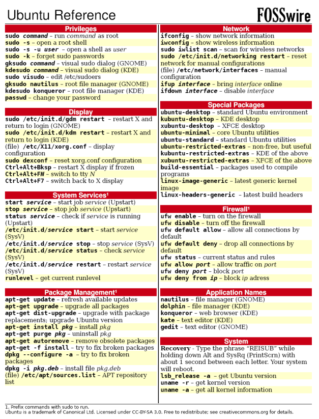
-
Unix/Linux Command Reference 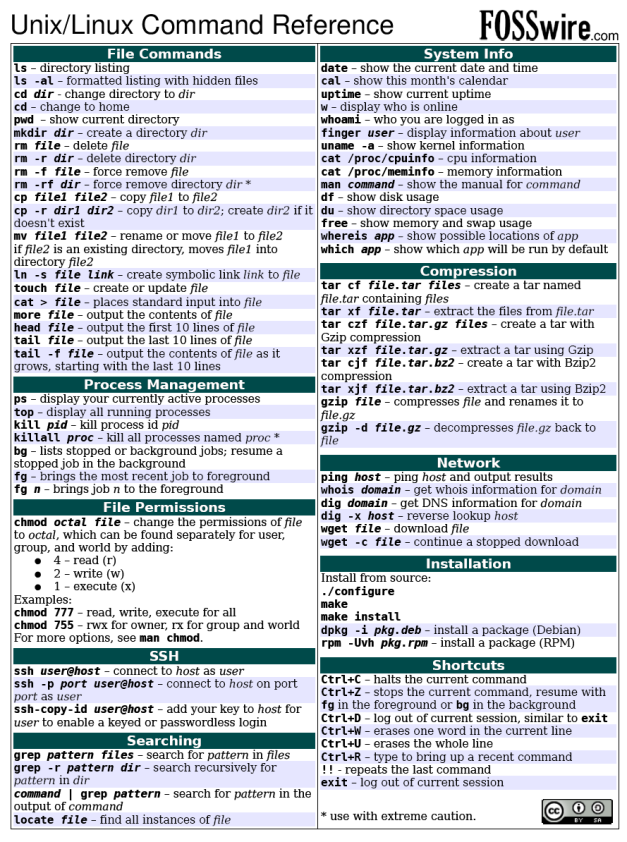
Itu beberapa command yang saya ingat saat ini yang bisa digunakan dibanyak distro Linux, walaupun ada beberapa yang hanya khusus di Ubuntu saja. Jika ada yang saya ingat lagi, akan saya tambah.